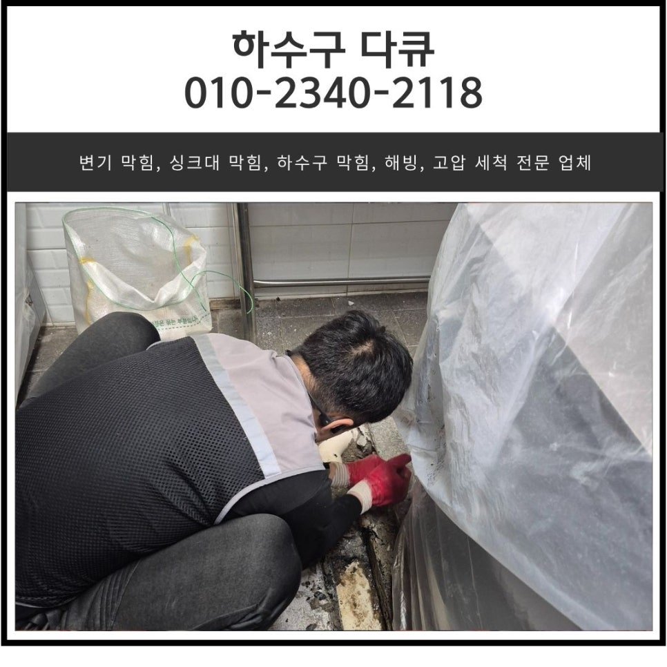
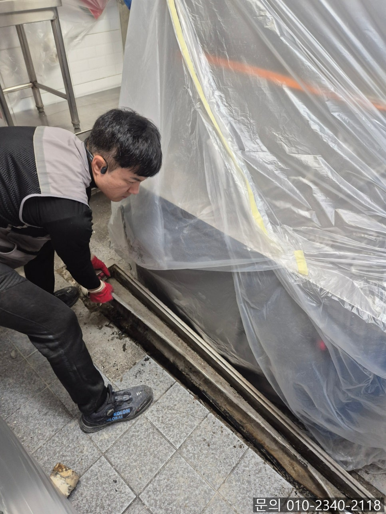
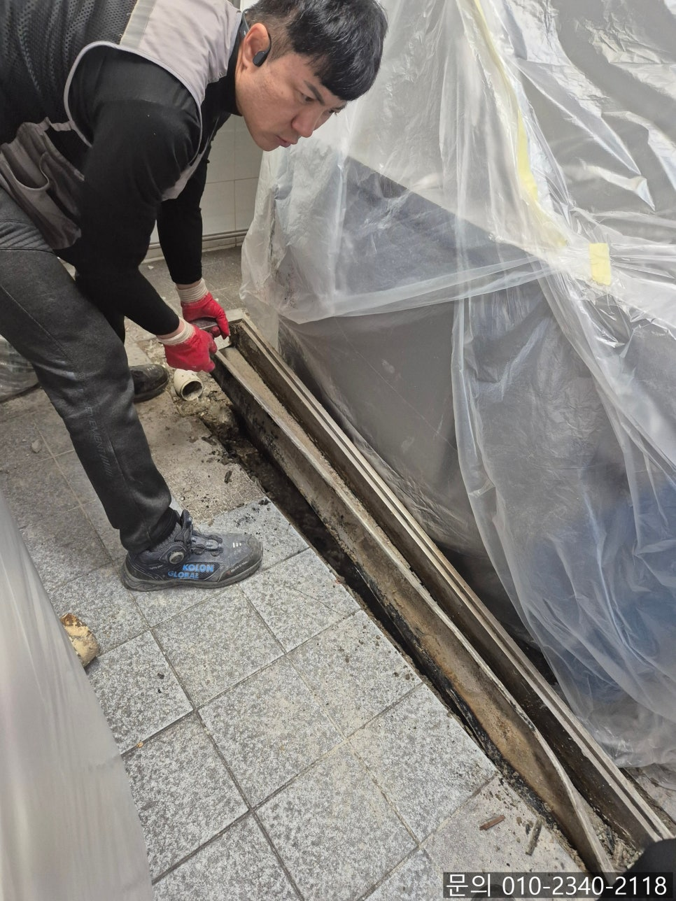
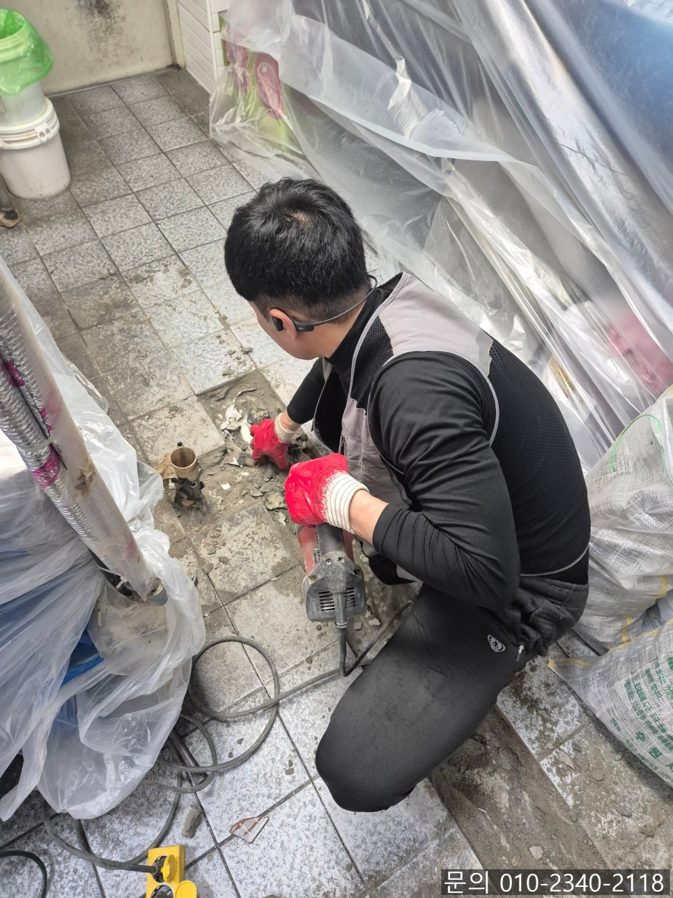
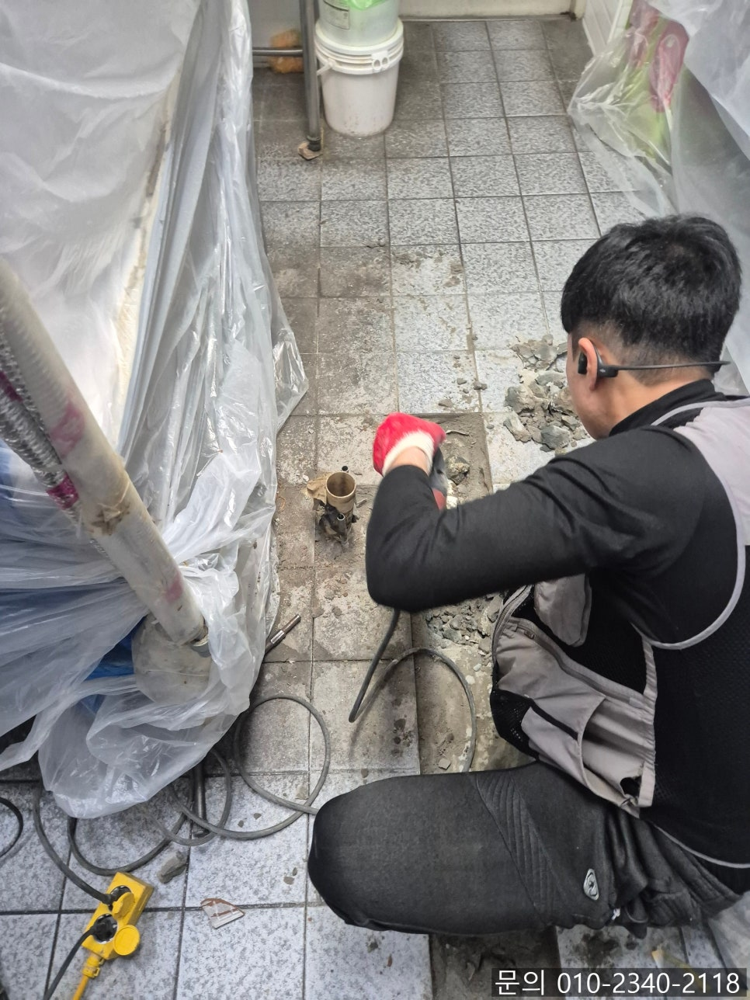
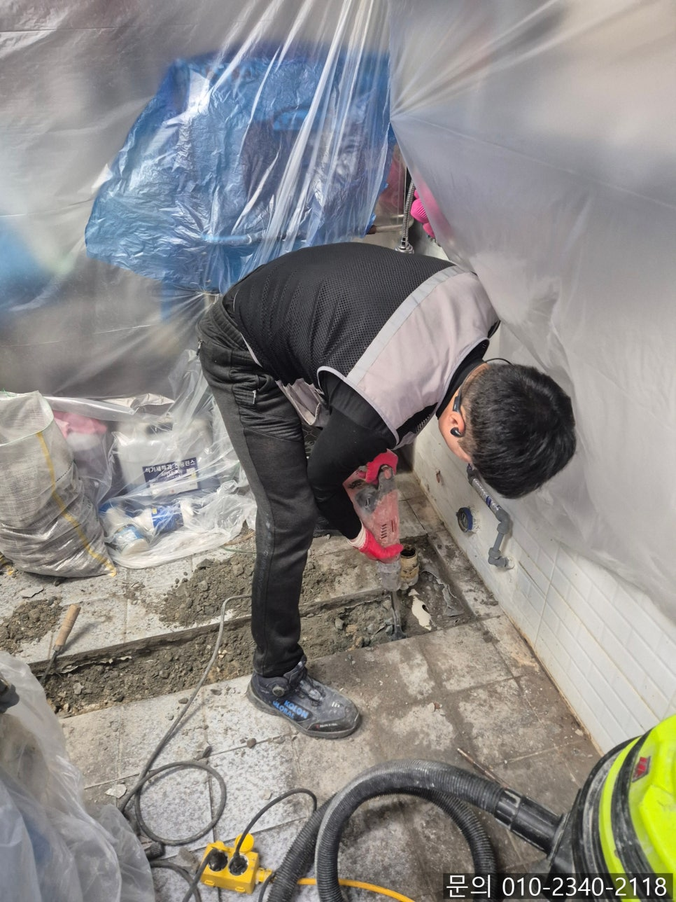
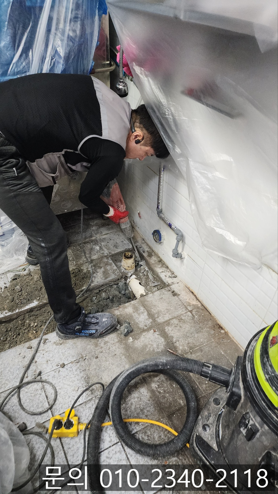

🏠 송탄동 식당 주방 하수구 누수 평택 서정동 하수도 배관 공사 전문 업체
평택 하수구막힘 전문 시공 후기

📋 작업 개요
- 위치: 평택
- 서비스 유형: 하수구막힘, 배관막힘, 누수수리, 역류해결, 배관청소, 설비공사
- 작업 일시: 2025. 6. 3. 19:54
- 업체명: 하수구수사대 (010-5615-2118)
🔍 문제 상황
안녕하세요.
송탄동 식당 주방 하수구 누수, 평택 서정동 하수도 배관 공사 전문 업체 하수구 다큐입니다.
며칠 전, 송탄동에 위치한 식당에서 급히 연락을 받았는데요.
문제없이 잘 사용하던 주방 바닥에서 물이 조금씩 역류한다는 전화였습니다.
식당은 주방이 청결이 가장 중요하다고 여기시는 사장님 덕분에 정기적으로 배관 청소를 하시면서 관리하셨지만, 식당 주방 특성상 물을 자주, 많이 사용하다 보니 역류의 원인이 뭔지 궁금하다고 하셨어요.
송탄동 식당 주방 하수구 역류, 누수의 원인을 찾기 위해 하수구 다큐는 필요한 장비를 챙겨 현장으로 방문했는데요.
바닥에 매립되어 있는 배관의 경우 육안으로 확인이 어렵다 보니 배관 전용 내시경 카메라를 이용해 점검해 보니 배관 내부에 이물질이 가득 차 있는 상황이었습니다.

🔎 원인 분석
💡 전문가 진단: 정밀 진단 장비를 사용하여 슬러지의 고착 여부를 판명하고 타격/세척 작업을 실시했습니다.
단순히 막힘으로 인해 역류가 발생하는 경우도 있어 배관 청소를 진행해 봤으나 이물질이 깔끔하게 제거되지 않고, 이상함을 감지했습니다.
내시경 카메라를 이용해 다시 한번 배관을 점검해 보니 배관이 파손되어 누수가 발생하고 있는 것을 확인했어요.
고객님께 송탄동 식당 주방 하수구 누수의 원인을 내시경 카메라로 직접 확인 시켜드리고, 작업 방법에 대해 설명해 드렸습니다.
다행히 다음날이 휴무 시라고 바로 배관 교체 공사를 해달라고 요청하셨어요.
평택 서정동 하수도 배관 공사 전문 업체 하수구 다큐는 주방의 다른 기기들에 먼지나 각종 이물질이 들어가지 않도록 보양 작업을 하고 배관 공사를 시작했습니다.
평택 서정동 하수도 배관 공사 전문 업체 하수구 다큐는 먼저 주방 바닥 타일을 제거하는 작업을 진행했어요.
이번 현장처럼 식당 주방의 경우 매일 뜨거운 물과 세제를 반복해서 자주, 많이 사용하는 공간은 배관의 마모가 빠르게 진행되는 편이에요.

🔧 작업 과정
특히 오래된 상가의 경우 초기 시공 상태나 자재의 품질에 따라 더 빠르게 진행되기도 합니다.
배관이 지나가는 곳이 타일을 제거해 보니 예상했던 대로 파손으로 인해 물이 차 있는 것을 확인할 수 있었습니다.
고객님께서도 내시경으로 확인했을 때는 진짜 파손된 게 맞을까? 생각하셨지만 눈으로 직접 확인하시더니 역시 전문가는 다르다고 엄지척해 주셨어요.
이제 새로운 배관을 길이에 맞게 잘라 연결해 줘야겠죠?
기존에 설치되어 있는 배관과 맞는 크기로 준비해 연결해 준 다음 물을 틀어 다른 문제점은 없는지 테스트도 꼼꼼하게 진행한 다음 몰탈을 이용해 마무리 작업을 진행합니다.
평택 서정동 하수도 배관 공사 전문 업체 하수구 다큐는 누수, 역류 문제를 모두 해결한 뒤 가장 중요하게 생각하는 것은 바로 마감이라고 말씀드리는데요.
아무리 완벽하게 잘 고쳐도 마감이 지저분하게 될 경우 전체적인 인상이 나빠질 수 없기 때문이에요.
특히 식당의 주방처럼 위생이 중요한 공간의 경우 더 신경 써서 마감을 진행해 드리고 있습니다.
기존에 있던 타일과 완전히 동일한 타일은 구하기 어렵다 보니 최대한 비슷한 타일을 준비해 높이까지 딱 맞춰서 마무리해드렸어요.
식당 주방 누수 문제는 단순히 물이 새는 문제만 있는 게 아닙니다.
방치하게 되면 곰팡이와 위생 관련된 문제로 이어질 수 있어 초기에 적절한 대응이 중요해요.


✅ 작업 완료
이번 현장의 경우 휴무 전날 저녁에 연락을 주셔서 한 번에 원인을 찾아 신속하게 해결해드릴 수 있어 정말 속 시원했던 현장입니다.
지금 하수구 막힘, 역류, 누수로 인해 고민하고 계신다면 하수구 다큐와 함께 해결해 보세요!
경기도 평택시 고덕중앙로 322 4층 129호




⚠️ 베란다 누수 및 방수 관리 방법
- ✅ 비가 많이 올 때 창틀 주변이나 아래층 천장에 얼룩이 생기는지 정기적으로 확인해 보세요.
- ✅ 우수관 주변 실리콘 마감이 들뜨거나 깨진 틈새가 있는지 손상 여부를 수시로 체크하세요.
- ✅ 베란다 바닥 타일의 줄눈(메지)이 소실되면 그 틈으로 물이 침투하여 누수가 유발됩니다.
- ✅ 누수 의심 증상 발견 시 방치하면 아래층 손실이 커지므로 즉시 전문가의 진단을 받으십시오.
💡 핵심 정리
- 확실한 장비 작업(내시경 점검 및 샤프트 스케일링)으로 원인을 뿌리 뽑습니다.
- 작업 후 1년 이내에 동일한 부위 재발 시 100% 무상 A/S 서비스를 보장합니다.
- 서울 · 경기 · 인천 전 지역에 24시간 언제든 긴급 출동할 수 있도록 항시 대기 중입니다.
❓ 자주 묻는 질문 (FAQ)
🚨 평택 하수구막힘 문제로 고민이신가요?
정확한 원인 진단과 확실한 시공으로 재발 없는 해결을 약속드립니다.
24시간 긴급 출동 | 서울 · 경기 · 인천 전지역 | 1년 내 재발 시 무상 A/S